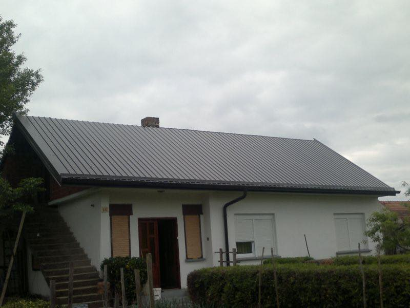
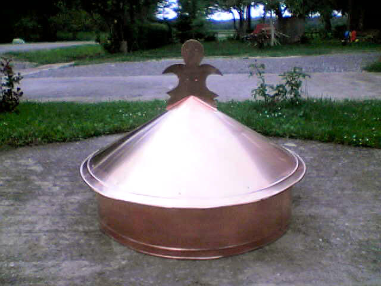
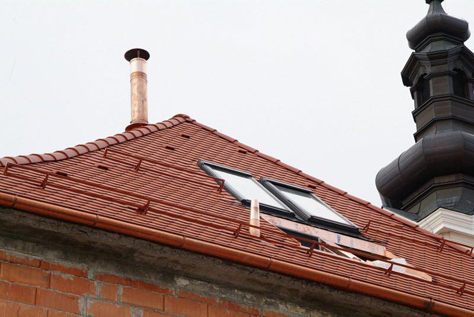

Limarijai krovoviiz jedne ruke.
Izrađujemo i montiramo građevinsku limariju u vlastitom pogonu, pokrivamo i saniramo krovišta, radimo tesarske, zidarske i bravarske radove, od obiteljske kuće do tornja katedrale.
Od lima do gotovog krova.
Osnovna djelatnost nam je izrada i montaža građevinske limarije. Zbog interesa kupaca proširili smo se na krovopokrivačke, tesarske, zidarske i bravarske radove.

Građevinska limarija
Oluci, odvodne cijevi, okapnice, vjetarlajsne, opšavni i zidni limovi, iz našeg pogona.
Detalji
Pokrivanje i sanacija krovišta
Gerard, Tilcor, Novatik i Prefa pokrovi te limeni pokrovi, po specifikacijama proizvođača.
Detalji
Profilirani limovi
Trapezni lim T-20 i lim u obliku crijepa za krovove, fasade, nadstrešnice i ograde.
Detalji
Hale i garaže
Samonosive lučne hale i garaže od savijenog lima te obloge od limenih panela, po mjeri investitora.
Detalji
Tesarski radovi i Velux
Krovišta, nadstrešnice, vrtne kućice i sjenice te ugradnja krovnih prozora.
Detalji
Radovi na visini
Limarski i krovopokrivački radovi na zgradama, tornjevima i sakralnim objektima.
Detalji
 Od 2004.
Od 2004.
Od obrta iz 2004. do d.o.o.
Limarija Sabljak d.o.o. osnovana je 15. lipnja 2012. u Brezovcu, 5 km od centra Bjelovara, pripajanjem Limarskog obrta Sabljak koji radi od 2004. godine.
Koristimo isključivo materijale provjerene kakvoće, a radove izvode naši stručno osposobljeni zaposlenici. Elemente građevinske limarije proizvodimo u vlastitom pogonu sa suvremenim strojevima i alatima.
Imamo licencu Hrvatske obrtničke komore za praktičnu nastavu i vježbe naukovanja za zvanje limar: učenici Srednje obrtničke škole u Bjelovaru zanat uče u našoj radionici uz mentora Senka Sabljaka.
Radimo i tamo gdje se ne smije pogriješiti.
Posjedujemo licencu Ministarstva kulture, Uprave za zaštitu kulturne baštine, za građevinske radove na zaštiti i očuvanju kulturne baštine.
 ObnovaKatedrala u Bjelovaru
ObnovaKatedrala u Bjelovaru
 ObnovaŽupna crkva u Garešnici
ObnovaŽupna crkva u Garešnici

ToranjRadovi na visini KrovišteGarešnica
KrovišteGarešnica
Provjereno, ovlašteno, upisano.
Kulturna baština
Licenca Ministarstva kulture za građevinske radove na zaštiti i očuvanju kulturne baštine.
Član HUK-a
Član Hrvatske udruge krovopokrivača od osnutka tvrtke. HUK daje dodatno jamstvo od 5 godina na naše radove.
VELUX klub
Član kluba VELUX preporučenih majstora, specijalizirani za ugradnju krovnih prozora.
Ovlašteni montažer
Ovlaštena tvrtka za montažu pokrova renomiranih proizvođača: Gerard, Tilcor, Novatik i Prefa.
Izvedeni radovi.
Koje krovne pokrove postavljate?
Ovlašteni smo za montažu pokrova renomiranih proizvođača, posebno Gerard, Tilcor, Novatik i Prefa, a izrađujemo i postavljamo limene pokrove (trapezni lim T-20 i lim u obliku crijepa).
Mogu li kod vas naručiti rezanje i savijanje lima po mjeri?
Da. U vlastitom pogonu režemo i savijamo limove na dimenzije prema potrebama kupca te izrađujemo profile i oblike po narudžbi.
Ugrađujete li krovne prozore?
Da. Član smo kluba VELUX preporučenih majstora i specijalizirani smo za ugradnju krovnih prozora.
Daje li se jamstvo na izvedene radove?
Član smo Hrvatske udruge krovopokrivača (HUK) od osnutka tvrtke. HUK daje dodatno jamstvo na naše izvedene radove u trajanju od 5 godina.
Treba li snjegobran na krovu s Gerard pokrovom?
Na krov pokriven Gerard pokrovom nagiba do 40° nije potrebna ugradnja snjegobrana.
Kada vas mogu posjetiti?
Ured u Brezovcu (Mišinački prilaz 13, 5 km od centra Bjelovara) otvoren je svakog radnog dana od 8 do 16 sati. Subotom, nedjeljom i praznikom ne radimo.